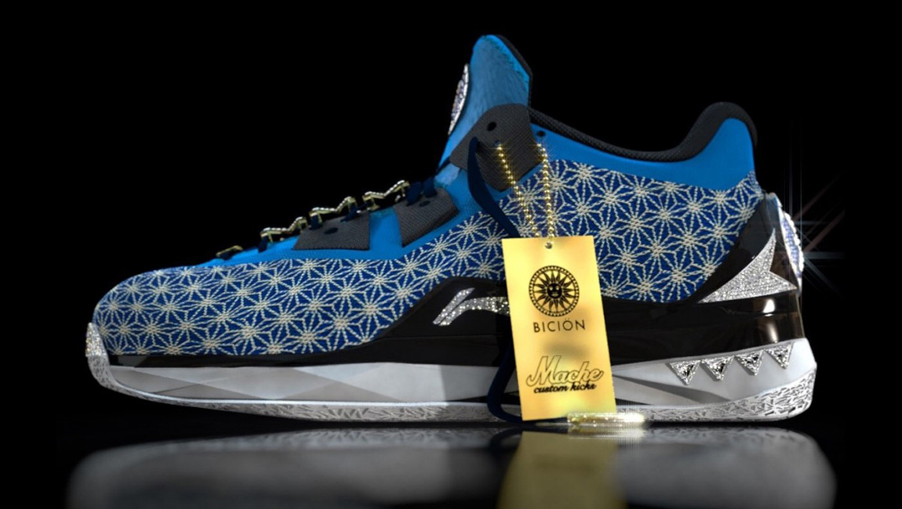
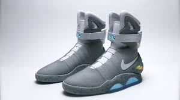
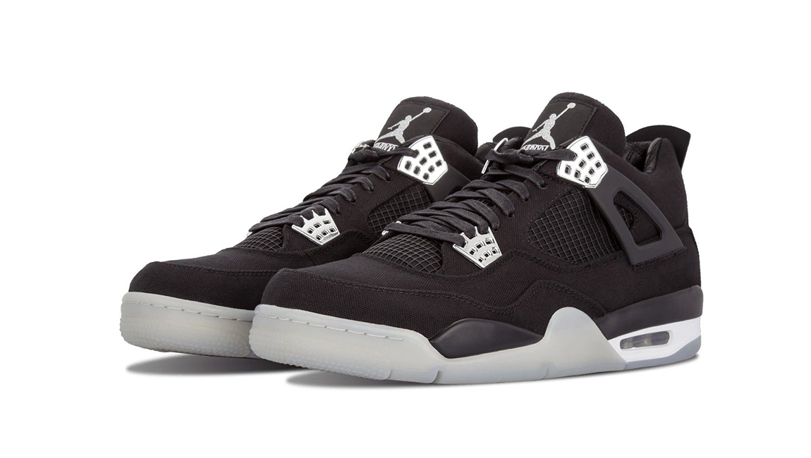

SNEAKERHEAD
| IMAGÉN |
DESCRIPCIÓN |
PRECIO |
 |
LI-NING WAY OF WAVE 4 THE FIRE MONKEY
ORO DE 18 KILATES, PIEDRAS PRECIOSAS Y DIAMANTES BLANCOS DECORAN LA ZAPATILLA QUE SE DISEÑÓ CON FINES BENÉFICOS.HABRÁ QUE TENER CUIDADO CON LOS PISOTONES EN EL METRO.
| HASTA 3 MILLONES Y MEDIO DE EUROS SE HAN PAGADO POR ESTE MODELO DE LA FIRMA DEPORTIVA HASTA AHORA.
|
|  |
NIKE AIR MAG
Es un zapato de edición limitada creado por Nike Inc. Es una réplica de un zapato que aparece en Back to the Future Part II . La Nike Mag se lanzó originalmente para la venta en 2011 y nuevamente en 2016. Ambos lanzamientos fueron extremadamente limitados en cantidad.
| EL PRECIO ES AL REDEDOR DE $6.75 MILLONES DE DOLARES
|

| Eminem x Carhartt x Air Jordan 4 Retro.
Jordan Brand se asocia con Eminem y Carhartt para una colaboración exclusiva en el Air Jordan 4 Retro. ... Un lanzamiento limitado, descúbralos en exclusiva a través de eBay a mediados de noviembre de 2015, y las ganancias se destinarán a la Fundación Marshall Mathers.
| EL PRECIO ES AL REDEDOR DE $15780 A $32640 DOLARES
|